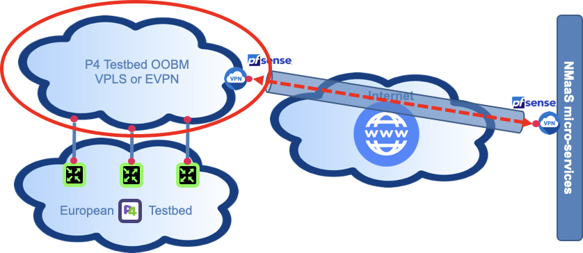
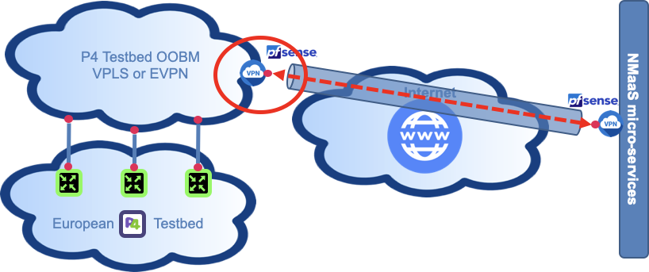
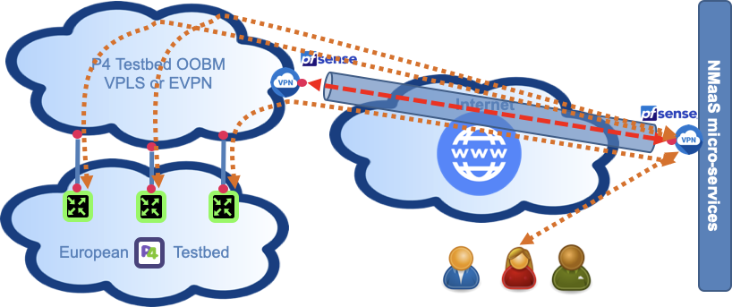

[ #002 ] NMaaS-101 - "I can help! But... Please could you open these two doors?"I
In article #001 your organisation has now a NMaaS domain and you are the domain manager for this domain.
Requirements
Overview
As it is now NMaaS is pretty useless for your organisation even if you deploy myriads of network management applications, and this is for 2 reasons:
- There is no particular connectivity enabling communication between NMaaS and the equipment to be supervised in your network.
- There is no particular connectivity enabling communication between your laptop and NMaaS network management application GUI.
Article objective
In this article, we will expose what is needed in order to enable communication between the NMaaS service and your equipment in your network and what is the process to configure your VPN client in order to use NMaaS services.
Let's take the example of the RARE domain, described in article #001, the objective is to:
- Check that you have an out of band management network enabling reachability to all your equipment
- Provide information required by the NMaaS team (list of users and also the internal out of band management subnet)
- Use existing or deploy a new OpenVPN client that has network reachability to the network above
- Establish a site to site OpenVPN tunnel towards the NMaaS OpenVPN server using the site to site OpenVPN profile (coming from the NMaaS team based on the information you provide)
- Configure a client to site OpenVPN tunnel towards the NMaaS OpenVPN server using the client to site OpenVPN profile (coming from the NMaaS team based on the information your provide)
Diagram
RARE lab
{kind=link}
The picture above depicts the four p4 switches connected by 10G circuit on top of GÉANT backbone. Each switch has:
- One console port (aka BMC port) connected to an equipment it slef connected to DSL (ISDN or even RTC) broadband network management network
- Ethernet management port connected to the P4 Lab out of band management network.
[ #002 ] - Cookbook
Prerequisites
P4 switches out of band network management VPN
{kind=link}

In the RARE network example, this network is a multipoint to multipoint L2 VPLS implemented on top of GÉANT backbone by GEANT OC team. All the switches have their management Ethernet ports connected to this VPLS MPLS VPN.
Required information for RARE support team
How this information is used by the RARE support team
Deploy an OpenVPN client in your out of band management VPN
{kind=link}

In the RARE network example, the VPN client is a PfSense firewall using the built-in OpenVPN plugin to establish the site-to-site VPN connection between the management subnet and the NMaaS network.Configure yout OpenVPN client on your laptop using provided NMaaS profile
{kind=link}

Once setup, you should have a full connectivity between your laptop and all the NMaaS services deployed in your domain.Verification
Check that your NMaaS domain is created and that you are the Domain Manager for your organization
In order to test your site-to-site VPN connectivity you can execute the following steps: 1. Try to access your private reverse proxy that will be responsible for providing web access to network management services deployed inside your NMaaS domain. You can first test the access to this proxy from your VPN concentrator. The IP address will be provided to you by the NMaaS team during the on-boarding process. 1. Ensure that the correct routing table entries have been pushed to your concentrator during the VPN connection phase. 2. Try to access the same reverse proxy but this time from one of your client devices that you expect to be managed by NMaaS. In order for this test to work, you will have to configure the required routes on your devices so that traffic destined for NMaaS goes through your VPN concentrator. If you use the same device acting as a VPN concentrator as your default gateway in your network, then you are all set; if not, routing entries will have to be manually added or pushed to your client devices. Depending on the software being used on the VPN concentrator, the methods for configuring it as a router so that it will accept transit traffic will vary. The most common scenario, using a simple Linux VM would require enabling the ip forwarding option on your system and setting the necessary iptables FORWARDING rules. Once setup, you should have a full connectivity between your laptop and all the NMaaS services deployed in your domain.Note on GUI-less devices
Since it is expected that most of your devices that you would like to manage are only providing console access, reachability of the reverse proxy can be tested with various tools, such as curl https://
Note on GUI-less devices
Since it is expected that most of your devices that you would like to manage are only providing console access, reachability of the reverse proxy can be tested with various tools, such as curl https://
Conclusion
After performing all of the above steps you should be ready to deploy your first NMaaS application and start managing your network! We will see in the next article how to deploy our first NMaaS service and consider oxidized CMDB software.
In this article you:
- Had a brief explanation regarding the mandatory connectivity required by NMaaS
- One is a permanent connectivity between the OOBM network and NMaaS services in which only network management information is conveyed, also called a Data Communication Network (DCN).
- The second one is an on demand connectivity enabled by an interactive VPN access.